Manual de usuario: encuentra negocios locales, detecta quién necesita una web o automatización y contáctalos con una propuesta lista.
Guía rápida para el equipo de la agencia · octubre 2026 · v3
Es una herramienta web interna para prospección comercial. Escribes una zona y un tipo de negocio (nicho) y la app te muestra los negocios reales de Google Maps, indica si tienen página web propia, cuánto potencial comercial tienen y, cuando se encuentra, su correo electrónico. Después genera mensajes de venta personalizados para contactarlos.
Negocios por zona y nicho, con teléfono, web, correo, reseñas y puntaje.
Auditoría de la web y textos listos para WhatsApp, llamada y correo.
Compara categorías de una zona para saber cuál conviene atacar primero.
Embudo de ventas con estados, notas, fechas y exportación a Excel.
Tu perfil comercial, para que los mensajes salgan a tu nombre.
Contador de consultas a Google para no pasarse del límite mensual.
A la izquierda está el menú con las cinco secciones (Buscar, Ficha del negocio, Radar de nichos, Mis leads y Ajustes) y, abajo, el medidor de cuota mensual. A la derecha se muestra la sección activa.
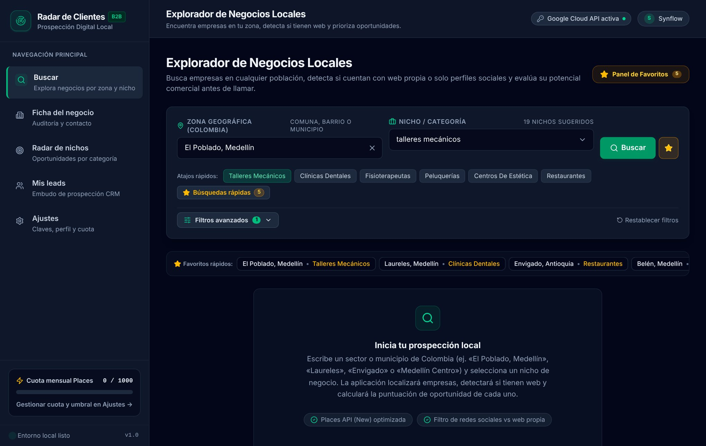
Todas las capturas de este manual usan negocios y datos de ejemplo, no clientes reales.
En el menú lateral entra a Buscar.
El campo Nicho / Categoría despliega 19 nichos sugeridos. También puedes escribir cualquier otro nicho y buscarlo. Los 14 originales son talleres mecánicos, clínicas dentales, fisioterapeutas, peluquerías, centros de estética, restaurantes, gimnasios, academias, inmobiliarias, reformas, veterinarios, autoescuelas, ópticas y gestorías. Se sumaron cinco nichos de negocios de barrio, donde es más común el temor a la tecnología y la oportunidad de digitalización es mayor:
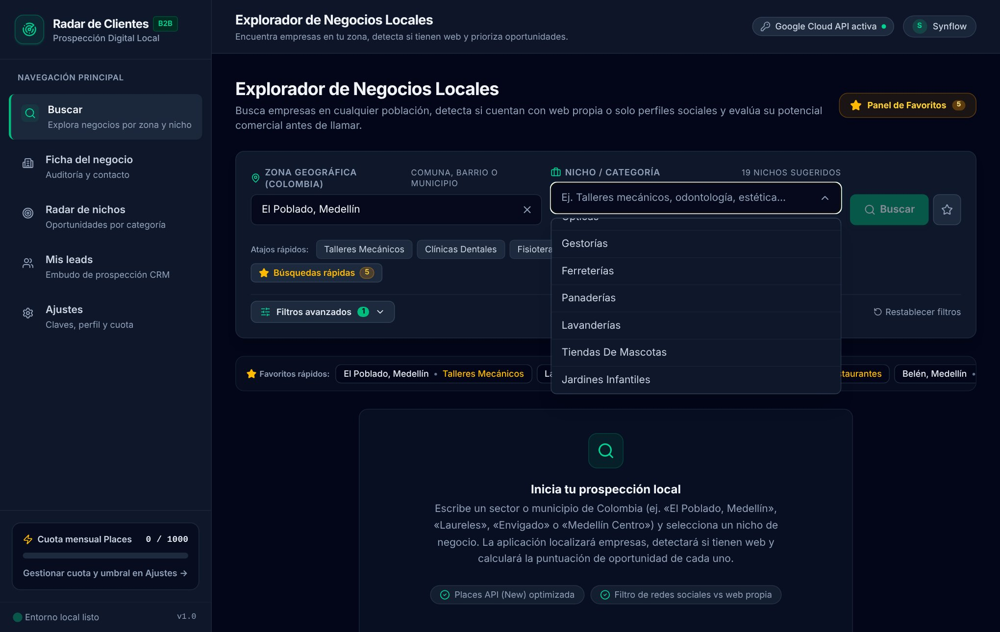
| Nicho nuevo | Qué puedes ofrecerles |
|---|---|
| Ferreterías | Catálogo digital con cotizaciones por WhatsApp. |
| Panaderías | Pedidos y encargos de tortas por WhatsApp con respuestas automáticas. |
| Lavanderías | Agente de WhatsApp para recogida, estado del pedido y cotizaciones. |
| Tiendas de mascotas | Catálogo con pedidos y domicilios, y recordatorios de compra. |
| Jardines infantiles | Sitio web con inscripciones y atención de padres por WhatsApp. |
Cada tarjeta resume un negocio: categoría, nombre, puntaje de oportunidad, dirección, correo, valoración y presencia web. Abajo tiene botones para llamar, abrir WhatsApp, abrir su web y guardarlo.
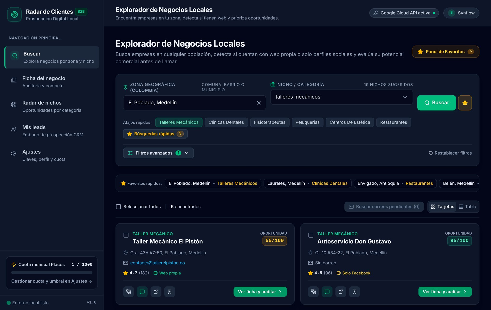
Cambia a Tabla para comparar muchos negocios de un vistazo, con una columna por dato.
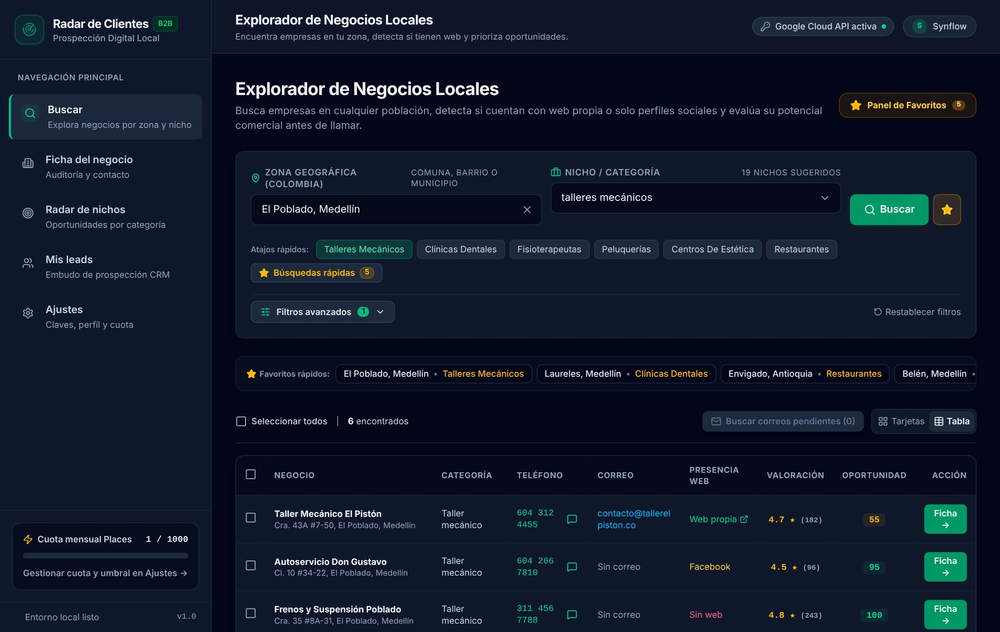
| Dato | Qué significa |
|---|---|
| Teléfono | Llamada directa y botón de WhatsApp con un clic. |
| Correo | Correo público de contacto con enlace para escribir. Ver sección 03. |
| Presencia web | Web propia, solo red social o directorio (Instagram, Facebook, Doctoralia…) o sin web. |
| Valoración | Estrellas de Google y número de reseñas. |
| Oportunidad | Puntaje de 0 a 100. Más alto = mejor prospecto. |
Marca varios negocios con la casilla (o Seleccionar todos) y pulsa Guardar seleccionados en mis leads.
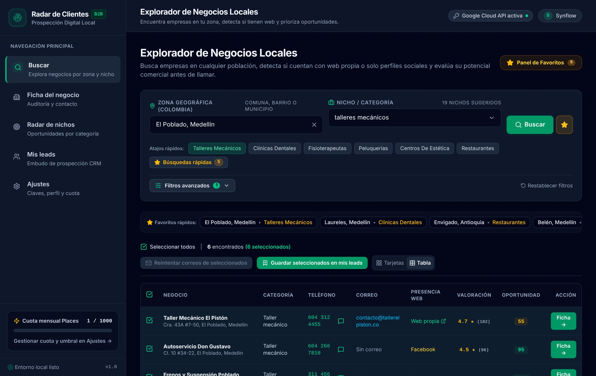
| Suma puntos | Resta o no suma |
|---|---|
| Sin web (+40 preliminar) o solo red social (+30) · muchas reseñas · buena valoración · tiene teléfono para contactarlo | Tiene web propia · pocas reseñas · sin teléfono |
El puntaje de la búsqueda es preliminar. Se afina cuando analizas la ficha del negocio.
Google Maps no entrega correos, así que la app los busca con Gemini (IA). Esto ocurre automáticamente después de cada búsqueda, en segundo plano.
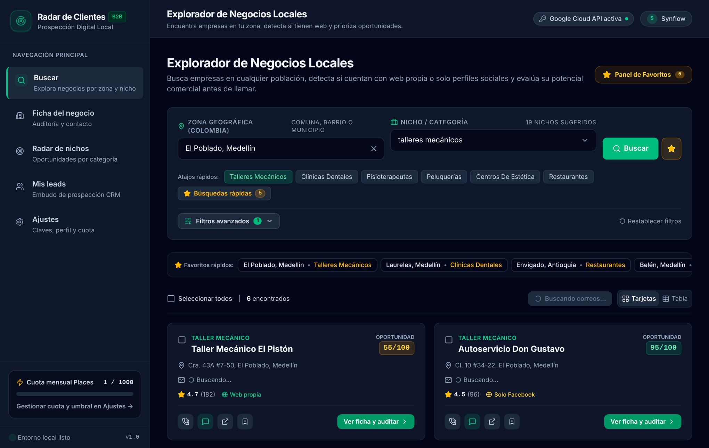
| Caso | Probabilidad de encontrar correo |
|---|---|
| Con web propia | Buena. Es donde más aparece. |
| Solo Facebook o Instagram | A veces, si lo publicaron en el perfil. |
| Sin presencia web | Baja. Casi siempre saldrá «Sin correo»; usa WhatsApp o llamada. |
Desde cualquier resultado pulsa Ver ficha y auditar (tarjetas) o Ficha (tabla). La ficha reúne todo lo del negocio y prepara tu mensaje de venta.
Pulsa Analizar web ahora. La app mide la web (velocidad en móvil, SEO, accesibilidad, buenas prácticas) y la IA revisa si tiene HTTPS, WhatsApp, reservas online y formulario. Si no hay web propia, analiza el negocio por su categoría y reputación. Arriba verás la puntuación de oportunidad y los botones para llamar, abrir WhatsApp, abrir la web y ver Google Maps; también puedes exportar la ficha en PDF.
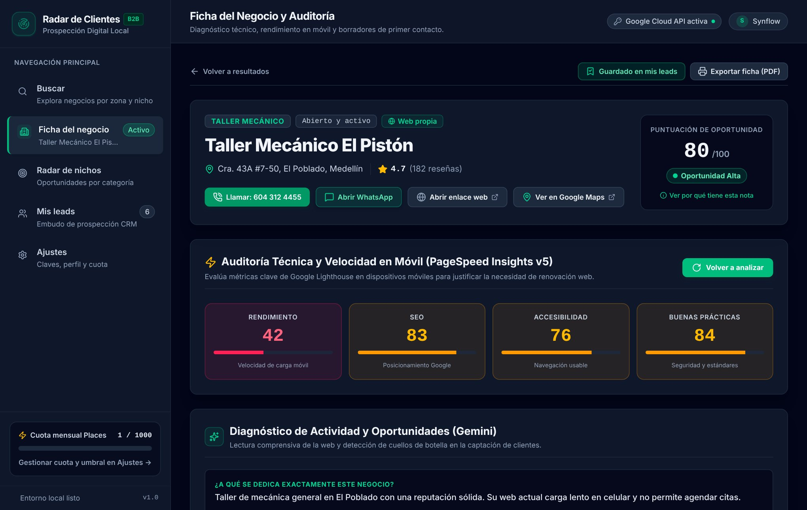
El resultado incluye las señales de desactualización, los problemas explicados en lenguaje simple (para contárselos al dueño sin tecnicismos) y el servicio recomendado: web nueva, agente de WhatsApp o sistema de citas.
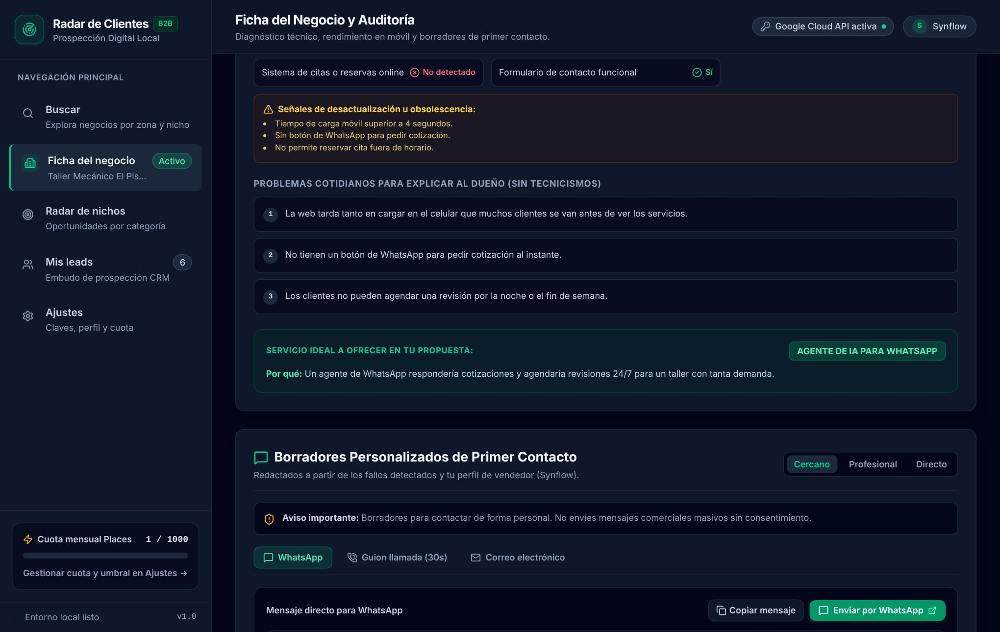
Amable y directo, para negocios pequeños y familiares.
Formal, para clínicas, inmobiliarias y empresas.
Va al grano, con los puntos clave.
| Canal | Qué obtienes |
|---|---|
| Mensaje listo; Copiar mensaje o Enviar por WhatsApp abre el chat con el número del negocio. | |
| Guion de llamada | Texto de 30 segundos para presentarte por teléfono. |
| Correo electrónico | Asunto y cuerpo del correo; copia y envía desde tu propio correo. |
Revisa y ajusta siempre el texto antes de enviarlo.
Al final de la ficha, en Seguimiento y Registro Comercial (CRM), guarda la fase del embudo, la fecha de próxima acción y tus notas privadas, y pulsa Guardar cambios del lead.
Compara varias categorías de una zona para decidir en cuál enfocarte antes de buscar. Escribe la zona, marca las categorías (están los 19 nichos sugeridos y puedes añadir los tuyos) y pulsa Ejecutar Radar de Oportunidad.
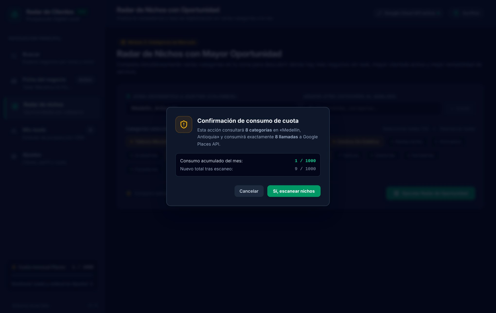
Arriba aparece la recomendación estratégica de la IA con los tres mejores nichos y el servicio que conviene vender en cada uno.
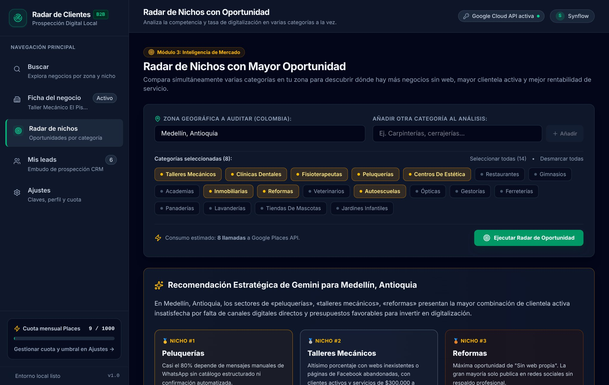
Más abajo, una tabla con cuántos negocios se encontraron, el porcentaje sin web propia, la valoración media, el servicio recomendado y la oportunidad. El botón Ver negocios te lleva directo a buscar esa categoría.
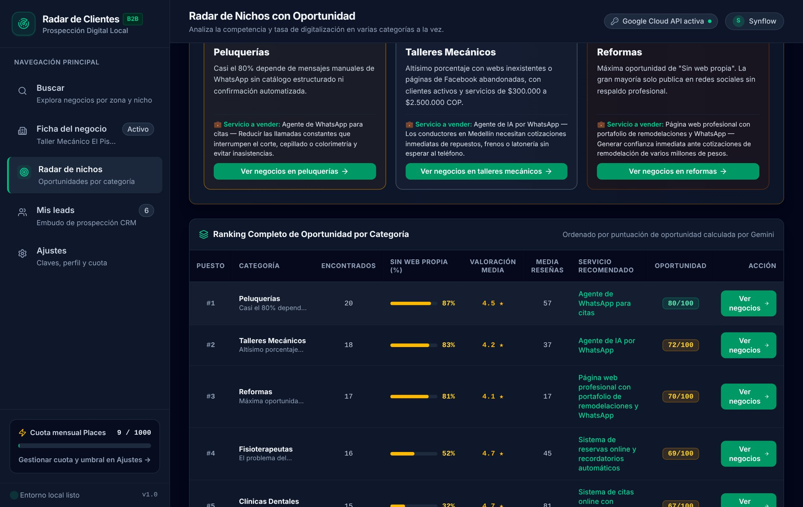
Aquí quedan los negocios que guardaste. Arriba hay un panel de métricas (negocios en el embudo, conversión, respuesta y valor estimado) que puedes plegar. Luego, un buscador por nombre, dirección, teléfono, correo o notas, y filtros por estado y nicho.
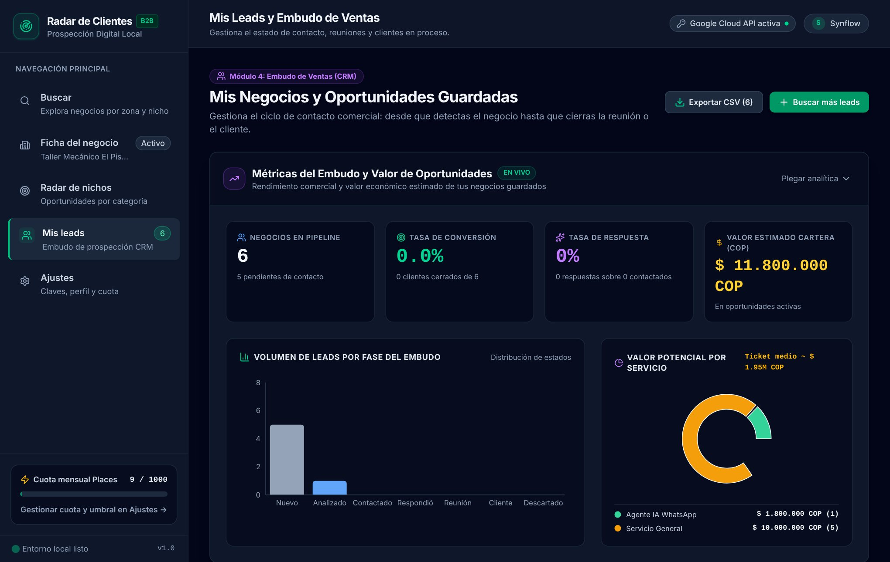
Una columna por etapa: Nuevo, Analizado, Contactado, Respondió, Reunión, Cliente y Descartado. Mueve cada negocio con el selector de su tarjeta.
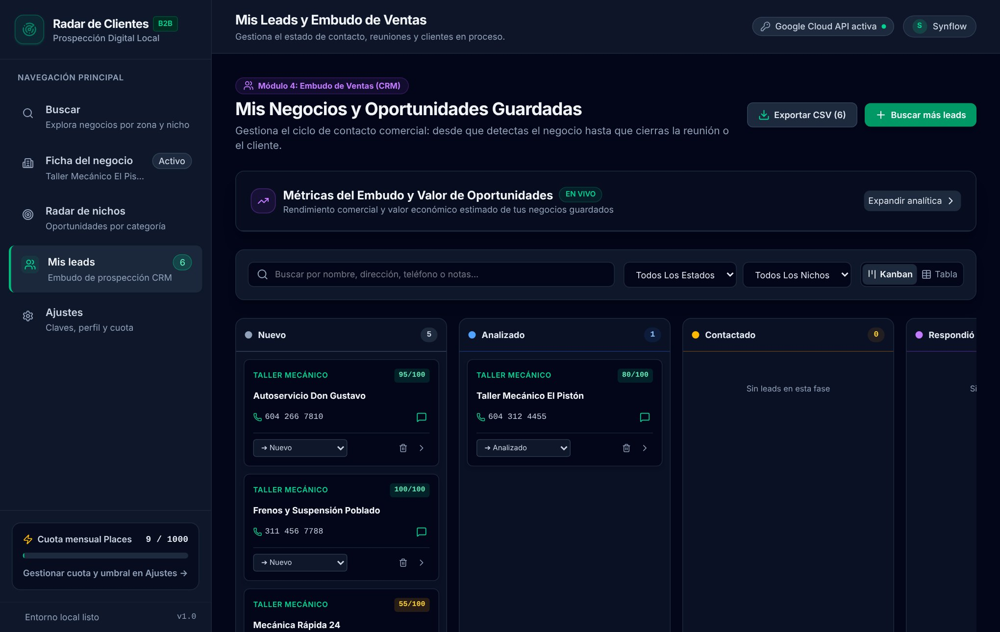
La tabla incluye el correo de cada lead, su estado, la presencia web y la oportunidad. Con Exportar CSV descargas la lista filtrada (nombre, teléfono, correo, web, puntaje, estado, notas) y la abres en Excel.
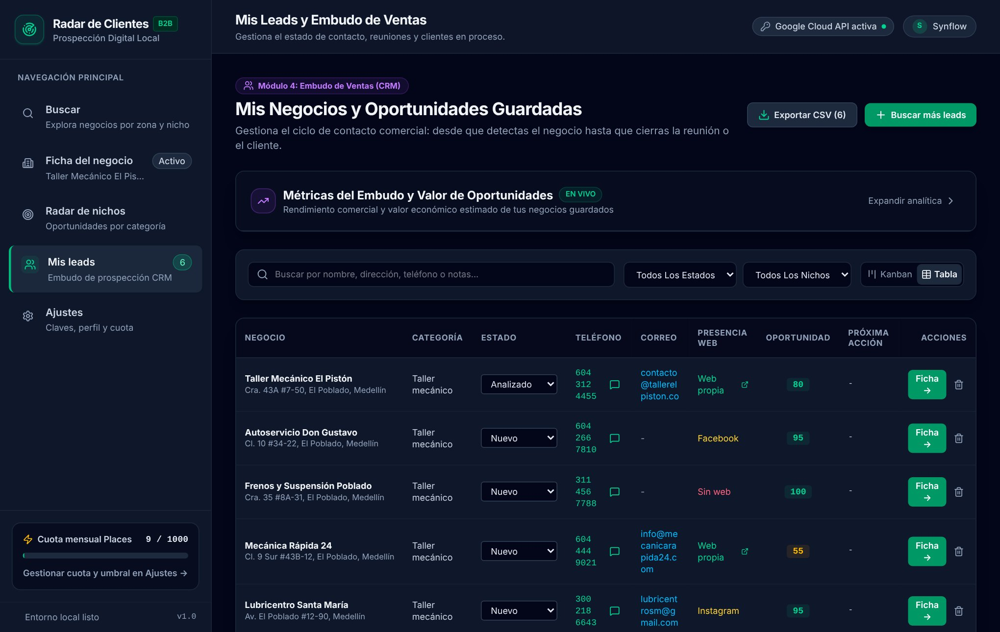
En Ajustes configuras lo que personaliza tus mensajes. Completa estos datos antes de generar propuestas:
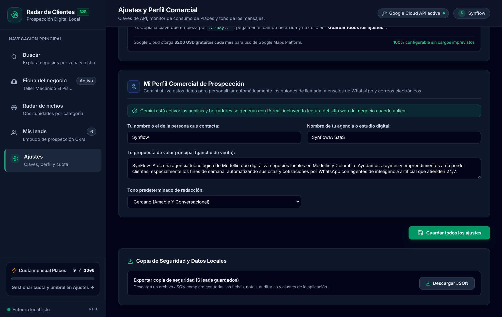
La clave de Google ya está configurada en el servidor. Esta sección también permite usar una clave propia y probar la conexión, pero no es necesario.
¿Por qué salen datos de ejemplo? Si Google no responde o hay un problema con la clave, la app muestra negocios de demostración y un aviso. Avisa al responsable técnico.
¿Un negocio no tiene correo y debería? Pulsa el botón de reintentar; si sigue sin aparecer, búscalo en su perfil de Google Maps o contáctalo por WhatsApp.
¿Puedo usarlo desde el celular? Sí, la app se adapta a pantallas pequeñas.
¿Veo la cuota? Sí, en la parte inferior del menú y en Ajustes hay un medidor de consultas del mes.